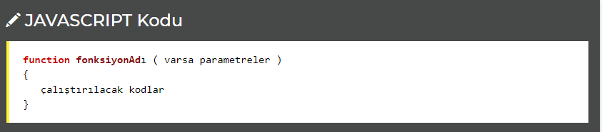
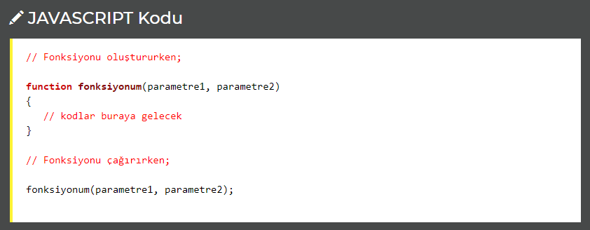
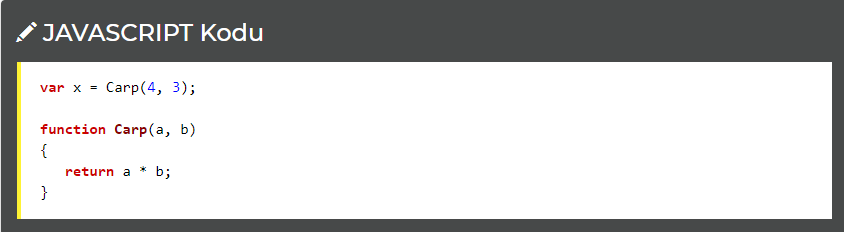
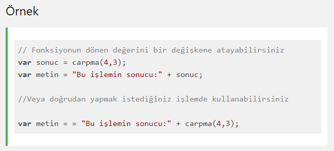

Fonksiyonlar, çağırıldıklarında belli işlemleri yapan kod gruplarıdır. Bunlar script içerisinde yer alır ancak kullanılmadıkları sürece çalıştırılmaz.
Bir fonksiyon oluşturulurken aşağıdaki formatta kod yazılır:
*fonksiyonAdı - Fonksiyonuna bir isim verin. Çalıştırırken bunu kullanacaksınız.
*parametre - Fonksiyonun çalışırken ihtiyaç duyacağı ya da işleyeceği değişkenlerdir. Hiç kullanmayabilirsiniz. Birden fazla ise aralarına virgül koymalısınız..
•Bir olay gerçekleştiğinde (örneğin butona basılması vs.)
•JavaScript kodları yardımıyla çağırılırsa
•Kendiliğinden (kendi içerisinde çağırır)
durumlarında çalışır.
Fonksiyonu çalıştırırken fonksiyon adı yazılır, parantez açılıp parametre varsa yazılır ve parantez kapatılır. Parametreler, fonksiyonda belirtildiği sırada olmalıdır.
Fonksiyonlar sadece kod parçalarını çalıştırmaz. Ayrıca çıkardıkları sonuçları da iletirler. Bunun için return kodu kullanılır.
Örneğin bir fonksiyon yazalım, kendisine verilen iki sayıyı çarpıp sonucu yine bize iletsin.
x'in değeri 12 olacaktır.
Ayrıca return sadece veri getirmek için değil, fonksiyonu sonlandırmak için de iyi bir yoldur. Çünkü return; kullanıldığı yerden itibaren fonksiyonun diğer kodları çalıştırılmayacaktır.
JavaScript fonksiyonun sadece adını yazarsanız geriye fonksiyon nesnesi döner.
Fonksiyonu () simgeleri ile çağırırsanız size sonuç döner.
örneği inceleUyarı: Kodu incelemek için örneği incele dedikten sonra CTRL+U tuşuna basınız
Bir fonksiyonun dönen değeri doğrudan bir değişkene atanabilir.
Bunun yanında fonksiyon string birleştirme ya da matematiksel işlemlerde doğrudan da kullanılabilir.
